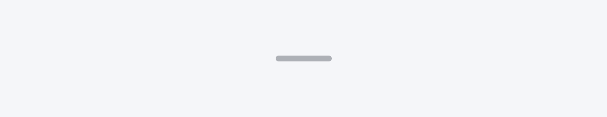

StudioSheetDragHandle
홈·템플릿의 높이가 콘텐츠에 따라 변하는 시트에 명시적인 닫기 조작을 제공합니다.
- 컴포넌트 ID
studio-sheet-drag-handle- 분류
- 모달
- 구현
StudioSheetDragHandle·MyWidget/app/src/main/java/com/mywidget/editor/core/ui/StudioChromeControls.kt:109- 주요 API
- onDismiss, testTag, enabled
- 지원 상태
- 활성
- 잠금
- 변형
- 공용 닫기 핸들
- 크기
- 48×48dp 터치
- 38×4dp 표식
- 테마·토큰
- onSurfaceVariant
- 접근성·사용 규칙
- 닫기 이름이 있는 버튼이며, 스와이프 닫기는 시트 컨테이너가 담당합니다.
- 공통 사용 여부
- 홈·보관함의 크기 선택과 템플릿 상세에서 사용
- 설계 품질
- 콘텐츠 높이 시트에 공유되는 작은 표면임
- 판단
- 유지
- 판단 근거
- 시각 핸들과 생성 중 취소 제한을 일관되게 연결합니다.
- 구현·문서
- 현재 소스 위치와 심볼 확인
- 렌더링
- 네이티브 캡처 있음
코드 예시
StudioSheetDragHandle(onDismiss = {}, testTag = "sample_handle")Android 네이티브 예시
아래 캡처에 표시된 상태와 기기 조건을 확인했습니다.

411 × 891 dp · 560 dpi · 글꼴 1배 · API 35 · ko-KR
캡처 기준 HEAD
ff118cc8d · 소스 지문 73da2a0be891 · 2026-11-13T10:23:11.274577Z411 × 891 dp · 560 dpi · 글꼴 1배 · API 35 · ko-KR
캡처 기준 HEAD
ff118cc8d · 소스 지문 73da2a0be891 · 2026-11-13T10:23:11.274577Z